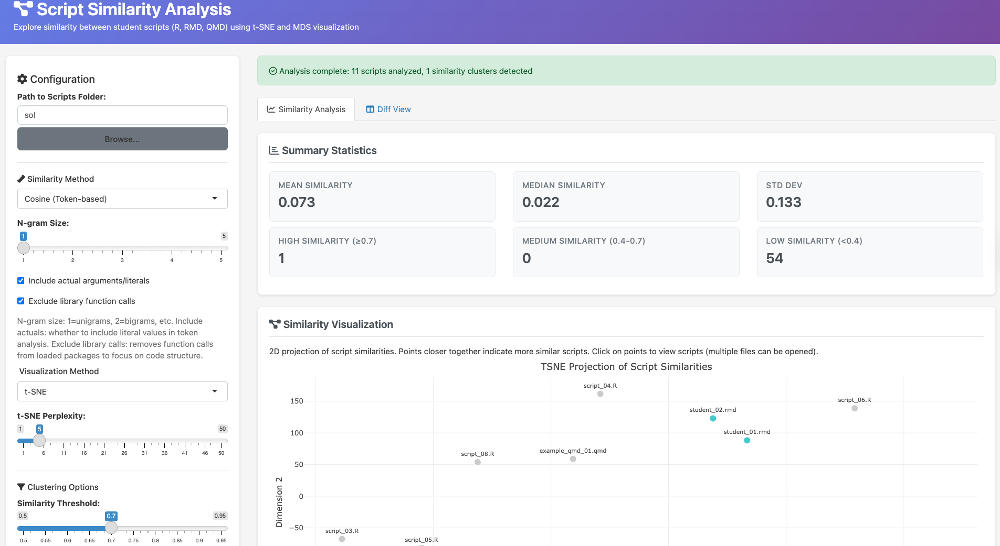
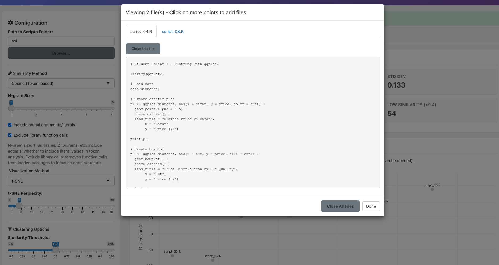

Shiny App: Similarity Checks
shiny_similarity.RmdIntroduction
The similarity app is an instructor-facing shiny web application for analyzing code similarity across a batch of student submissions. While the solution checker helps individual students validate their work before submission, the similarity app helps instructors review an entire class at once. It can identify clusters of suspiciously similar scripts, visualize how different students approached the same problem, and provide a side-by-side comparison of any two submissions. This makes the application useful both for detecting potential plagiarism and for understanding the range of solutions students produce.
To run the similarity app locally:
library(shiny)
runApp(system.file(file.path('shiny', 'similarity_app', 'app.R'),
package = 'autoharp'))When the application launches, the instructor is presented with a configuration panel on the left and a results area on the right. The configuration panel allows the instructor to specify the folder containing student scripts, choose a similarity method and visualization technique, and set a threshold for cluster detection.

The application supports three methods for computing pairwise similarity:
Cosine similarity (token-based). This is the default and recommended method for most use cases. It parses each script into tokens using ’s
rmd_to_token_count()function, constructs TF-IDF weighted frequency vectors, and computes cosine similarity between them. The method is fast and robust to formatting differences. Instructors can configure n-gram size (from unigrams to 5-grams), choose whether to include literal values in the token set, and optionally exclude function calls from loaded packages to focus on the structure of student-written code.Jaccard similarity (set-based). This method compares the unique tokens present in each script using the Jaccard index (intersection over union). Unlike cosine similarity, it ignores how often tokens appear and focuses only on whether they appear at all. This can be useful when detecting shared vocabulary matters more than shared patterns of use.
Edit distance. This method computes the Levenshtein edit distance between the raw code strings, normalized by the length of the longer script. It is the strictest method, sensitive to whitespace, variable names, and formatting. It works best for detecting near-verbatim copies.
After selecting a similarity method, the instructor chooses a visualization technique. The application offers t-SNE (t-Distributed Stochastic Neighbor Embedding) via Rtsne, which excels at revealing local clusters, and MDS (Multi-Dimensional Scaling), which provides a more stable, deterministic projection that preserves global distances. The resulting 2D scatter plot is rendered using plotly, making it interactive: instructors can hover over points to see script names and click to view the full script content.

The application also generates a hierarchically clustered heatmap showing all pairwise similarity scores. This visualization makes it easy to spot blocks of high similarity and understand the overall distribution of scores across the class.

Below the visualizations, the application presents several summary panels:
- Summary statistics. Mean, median, and standard deviation of pairwise similarities, along with counts of high-similarity (0.7 and above), medium-similarity (0.4 to 0.7), and low-similarity (below 0.4) pairs.
- Top similar pairs. A sortable [@DT] table listing the script pairs with highest similarity scores, allowing instructors to quickly identify submissions that warrant closer review.
- Detected clusters. Groups of scripts whose pairwise similarities all exceed the configured threshold. Each cluster is listed with its member scripts, making it easy to identify groups that may have collaborated or copied.
- Full similarity matrix. A searchable table containing all pairwise similarity scores, which can be downloaded as a CSV file for record-keeping or further analysis.
The application also includes a dedicated Diff View tab for detailed comparison of any two scripts. Instructors select two files from dropdown menus and click “Compare Scripts” to see a side-by-side view with synchronized scrolling. Lines are color-coded to highlight differences: yellow for modified lines, green for additions, and red for deletions.
Here is an outline of the files in the similarity app directory:
list.files(system.file("shiny", "similarity_app", package = "autoharp"))
#> [1] "app.R" "R" "README.md" "sol" "www"-
app.R: Contains the UI and server logic for the application. -
R/helpers.R: Helper functions for token parsing, similarity computation, dimensionality reduction, and cluster detection. -
www/styles.css: Custom CSS for styling the application interface. -
README.md: Documentation with usage instructions and guidance on choosing between similarity methods. -
sol/: A folder containing example scripts for demonstration purposes.
The R/helpers.R file implements the core computational
functions. For cosine similarity, it uses a vectorized approach that
constructs a document-term matrix and computes all pairwise similarities
in a single matrix operation, making it efficient even for large
classes. For Jaccard and edit distance, which require pairwise
computation, the app supports parallel processing on Linux and macOS
through the n_cores parameter, using
parallel::mcmapply() to distribute the workload across
multiple CPU cores.
Interpreting similarity scores requires context. A score of 1.0 indicates identical scripts. Scores between 0.7 and 0.99 suggest high similarity that may warrant investigation. Scores between 0.4 and 0.69 typically indicate similar approaches or shared patterns, which may be expected when students solve the same problem. Scores below 0.4 generally indicate distinct implementations. The similarity threshold slider (defaulting to 0.7) controls how aggressively the app groups scripts into clusters; a higher threshold produces fewer, tighter clusters.